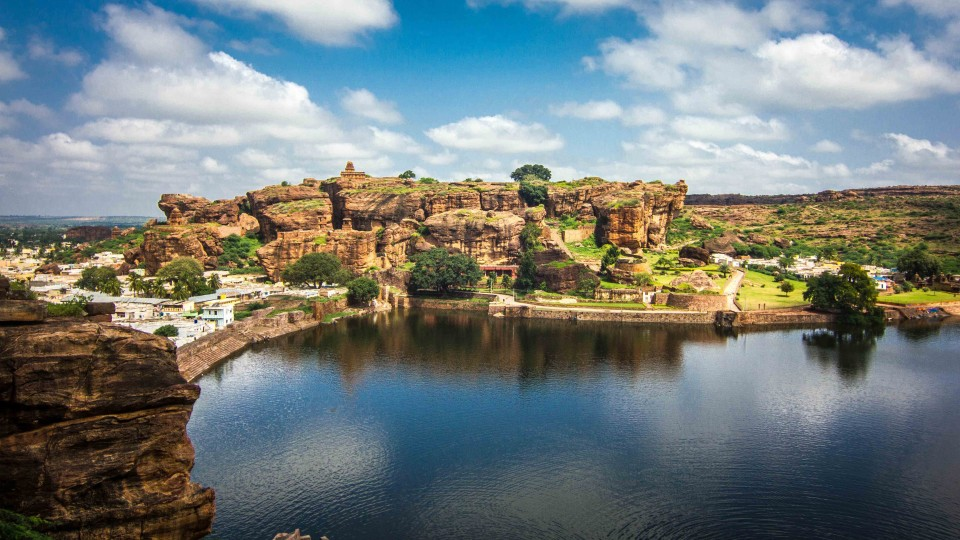
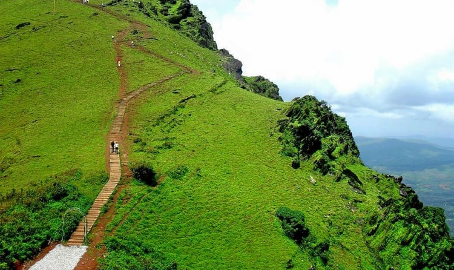
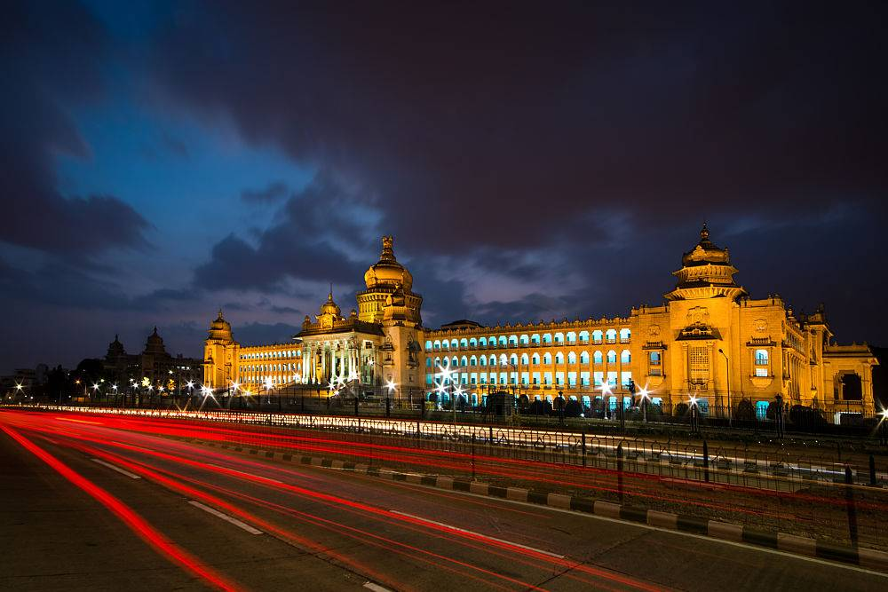

KarnatakaTourism
One state . Many world
Badami

Location
Bengaluru - 480
Hubli - 110
Bijapur - 150
The capital of the mighty Badami Chalukyas might have shrunk into a few scenic square kilometres in terms of touristy value. But Badami still retains its majesty. The locale of its famous cave temples, made up of two giant sandstone hills that flank the placid water of the Agastya Lake paint a stark picture of earthy reds, muddy greens and stone browns set against a sky of acrylic blue - burning an impression into the canvas of your mind. One that you aren't likely to forget in a hurry.
Location
Bengaluru - 480
Hubli - 110
Bijapur - 150
Bandipur National Park
Go wild and see just how therapeutic it can be. Trade those concrete jungles for a fresh breath of green. Put a pause on the rat race and ride an elephant instead. Take a break from bearding the lion in his corner office and go looking for tigers. The Bandipur Wildlife Sanctuary puts life back into perspective. Or rather it puts the perspective back into life.
Location
Mysore - 90
Bangalore - 220
Chikmagalur

Location
Mangalore - 150
Hassan - 62
Bangalore - 235
Chikmagalur has played host to an event, thanks to which, countless Indians wake up to brighter mornings. Centuries ago, when the Sufi mystic Baba Budan smuggled seven coffee beans from Yemen into India, he probably didn't bargain for millions of coffee junkies unwittingly blessing his soul everyday, with every sip of their coffee. Chikmagalur, whose hills nurtured the coffee culture at its bosom, is a green slice of heaven on a permanent coffee high.
Location
Mangalore - 150
Hassan - 62
Bangalore - 235
Gokarna
A sleepy Brahmin town, lodged somewhere between a conservative society and a faithful hippy fan following, Gokarna is a dream destination for so many different reasons. Its refusal to fall into a certain type casted slot is just one of them. Open beaches, undiscovered coves, epiphanic sunsets, jagged cliffs, quaint temples and an evasive culture make Gokarna whatever you want it to be. Sun, sand and surf is what you go to Gokarna for, and the solitude it offers is like a bonus track on a great music album. The Om Beach, with its Om-shaped shoreline is a scramble down a rocky cliff - just like every other beach in Gokarna. Cliffs separate each of Gokarana’s five beaches from the other and offer spectacular views far out into the Arabian Sea. You can either take a boat ride to other beaches or walk it down.
Location
Mangalore - 210
Karwar - 58
Bangalore - 515

Bangalore

Location
Mumbai - 1033
Hyderabad - 566
Mangalore - 381
South India's most alive city is Bangalore. A melting point of ethnic and cultural backgrounds, the hoi polloi is charmingly mixed here. Nearly every one speaks English, even if it’s only a smattering, and everyone is aware of the privilege they're bestowed with. Yes, every resident of Bangalore, regardless of where they're from, takes immense pride in their address. Malls, parks, pubs, theatre, cafes, art galleries, palaces - at any given point, Bangalore is buzzing and alive with activity.
Location
Mumbai - 1033
Hyderabad - 566
Mangalore - 381
Shravanabelagola
Atop the Vindhyagiri hill stands Asia's tallest monolithic statue, and yet, you need to toil up 600-odd steps for a glimpse of it. Shravanabelagola as a Jain bastion is home to many basadis and is a vital stop to the pilgrim. The 52-foot statue of Bahubali from its high perch has a gaze that takes in the lay of a rather scenic land - a treat you can partake, provided you make the arduous climb up.
Location
Mysore - 88
Bangalore - 148
Hassan - 52